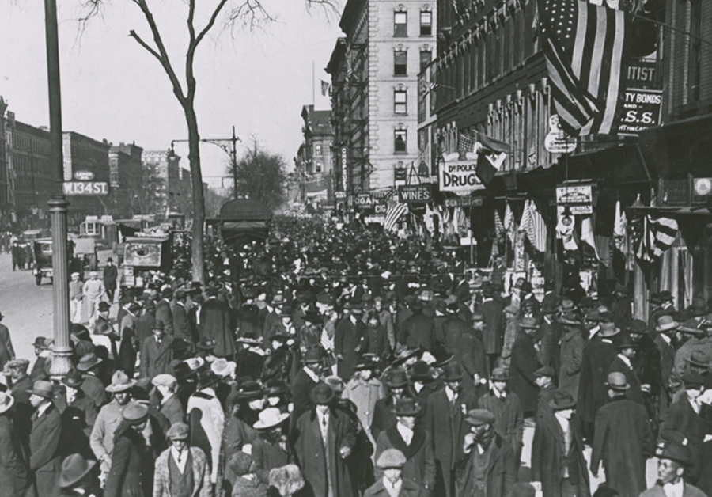
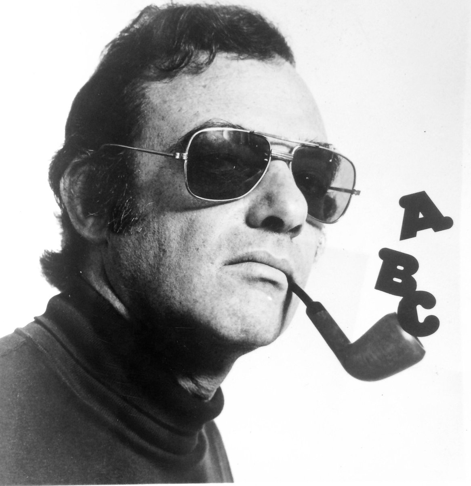
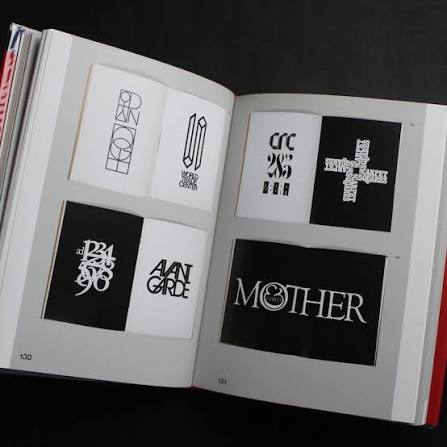
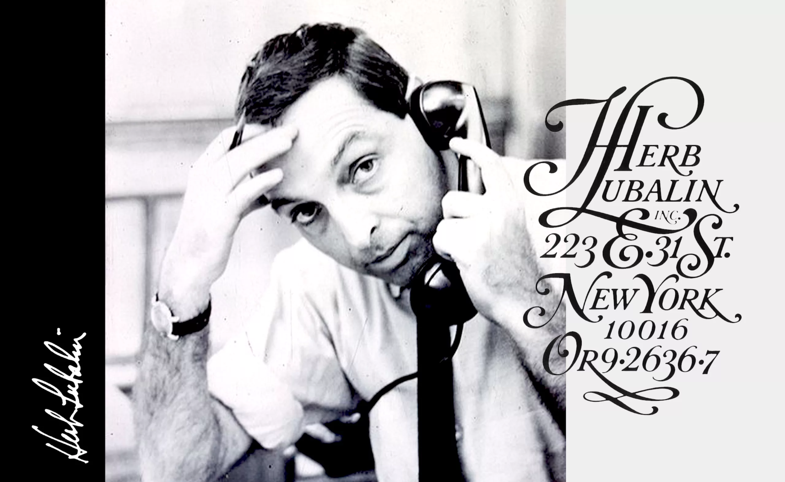
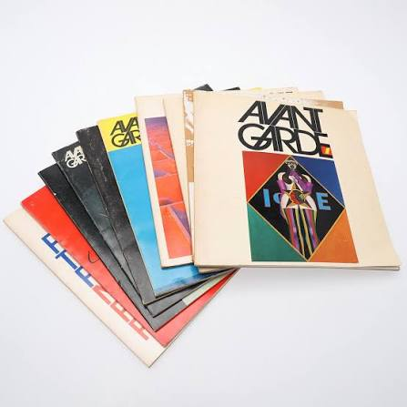
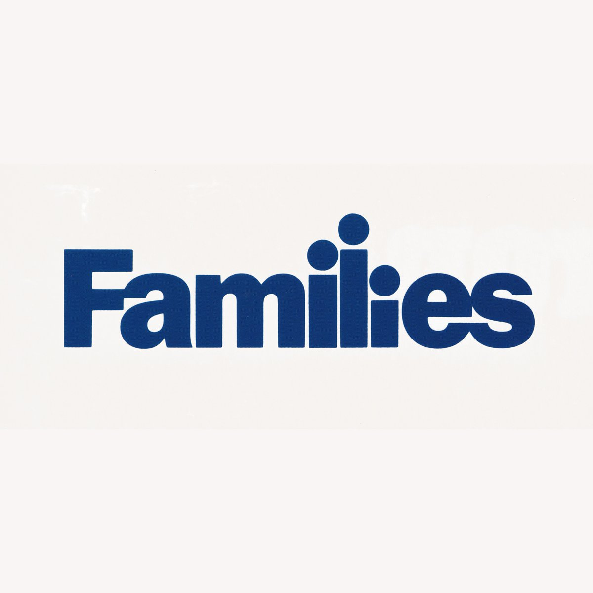
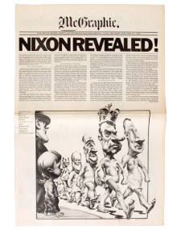
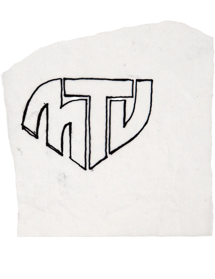
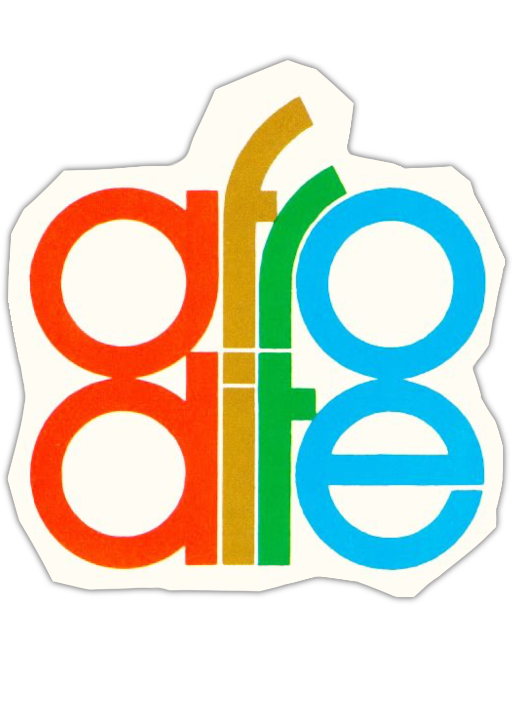
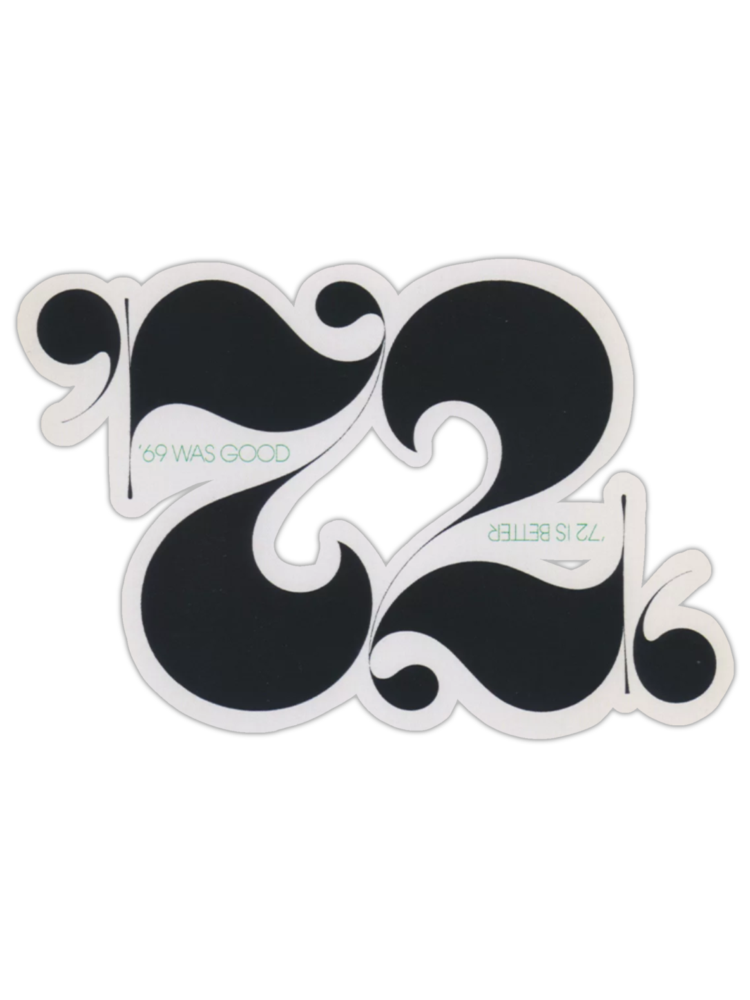

01 · Biography
Who Was
Who Was
Herb Lubalin
Image

1918Born in New York City. Trained at Cooper Union.
Image

1945Joins Sudler & Hennessy, rises to art director within a decade.
Image

1961Designs the "Mother & Child" logotype — a full sentence built from one letterform.
Image

1964Opens Herb Lubalin Inc., his own studio.
Image

1970Co-founds International Typeface Corporation (ITC) and launches Avant Garde magazine.
Image

1971Designs the Families logotype for the Center for Family Planning — one wordmark, one embrace.
Image 1981Dies in New York, leaving behind ITC Avant Garde Gothic, Lubalin Graph, and a new visual language.
1981Dies in New York, leaving behind ITC Avant Garde Gothic, Lubalin Graph, and a new visual language.
1981Dies in New York, leaving behind ITC Avant Garde Gothic, Lubalin Graph, and a new visual language.
Image 1
images/artifacts/artifact1.png
images/artifacts/artifact1.png

Image 2
images/artifacts/artifact2.png
images/artifacts/artifact2.png

Image 3
images/artifacts/artifact3.png
images/artifacts/artifact3.png

Image 4
images/artifacts/artifact4.png
images/artifacts/artifact4.png
